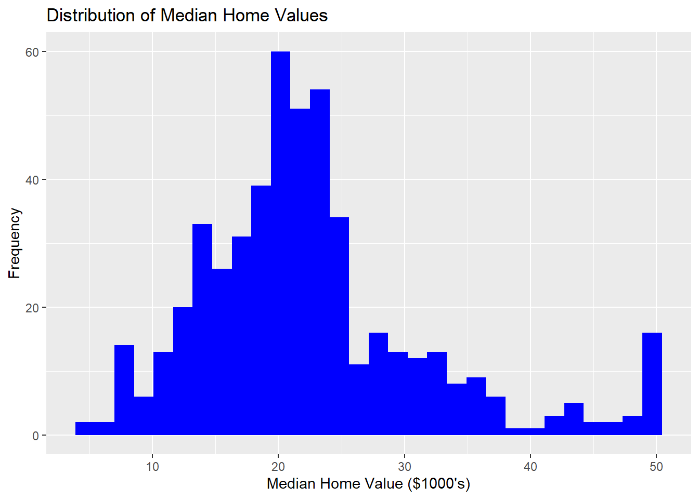
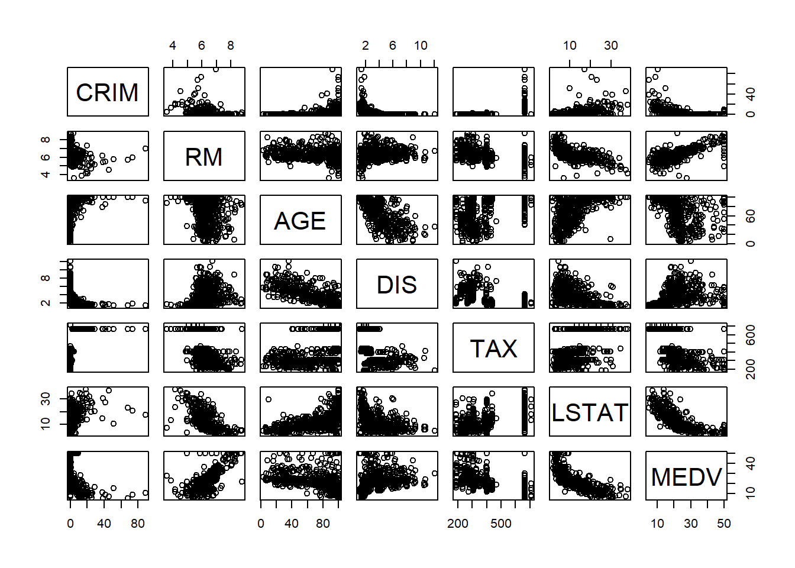
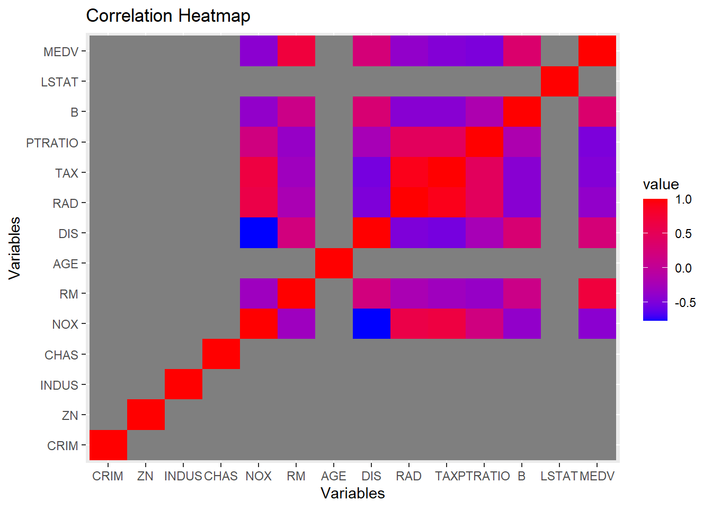
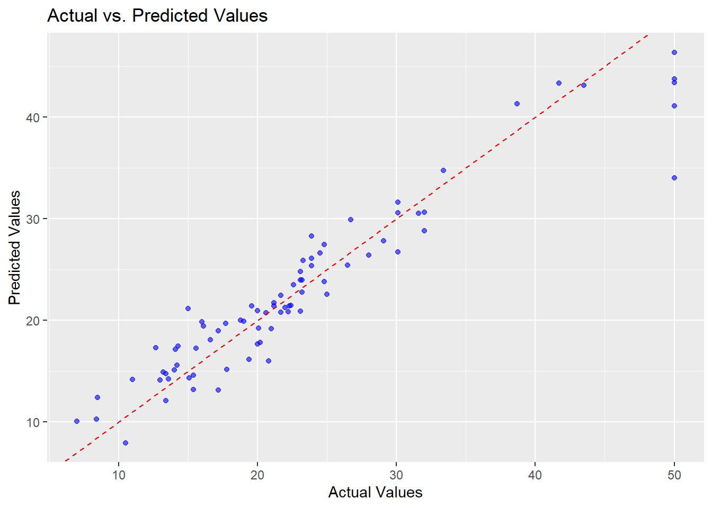

The following objects are masked from 'package:stats':
filter, lag
The following objects are masked from 'package:base':
intersect, setdiff, setequal, union
library(tidyr)library(reshape2)
Warning: package 'reshape2' was built under R version 4.3.2
Attaching package: 'reshape2'
The following object is masked from 'package:tidyr':
smiths
# Load the datasetHousingData <-read.csv("C:/Users/YOJANA/Downloads/AN/KN/HousingData.csv")# Display the structure of the datasetstr(HousingData)
'data.frame': 506 obs. of 14 variables:
$ CRIM : num 0.00632 0.02731 0.02729 0.03237 0.06905 ...
$ ZN : num 18 0 0 0 0 0 12.5 12.5 12.5 12.5 ...
$ INDUS : num 2.31 7.07 7.07 2.18 2.18 2.18 7.87 7.87 7.87 7.87 ...
$ CHAS : int 0 0 0 0 0 0 NA 0 0 NA ...
$ NOX : num 0.538 0.469 0.469 0.458 0.458 0.458 0.524 0.524 0.524 0.524 ...
$ RM : num 6.58 6.42 7.18 7 7.15 ...
$ AGE : num 65.2 78.9 61.1 45.8 54.2 58.7 66.6 96.1 100 85.9 ...
$ DIS : num 4.09 4.97 4.97 6.06 6.06 ...
$ RAD : int 1 2 2 3 3 3 5 5 5 5 ...
$ TAX : int 296 242 242 222 222 222 311 311 311 311 ...
$ PTRATIO: num 15.3 17.8 17.8 18.7 18.7 18.7 15.2 15.2 15.2 15.2 ...
$ B : num 397 397 393 395 397 ...
$ LSTAT : num 4.98 9.14 4.03 2.94 NA ...
$ MEDV : num 24 21.6 34.7 33.4 36.2 28.7 22.9 27.1 16.5 18.9 ...
# Display summary statisticssummary(HousingData)
CRIM ZN INDUS CHAS
Min. : 0.00632 Min. : 0.00 Min. : 0.46 Min. :0.00000
1st Qu.: 0.08190 1st Qu.: 0.00 1st Qu.: 5.19 1st Qu.:0.00000
Median : 0.25372 Median : 0.00 Median : 9.69 Median :0.00000
Mean : 3.61187 Mean : 11.21 Mean :11.08 Mean :0.06996
3rd Qu.: 3.56026 3rd Qu.: 12.50 3rd Qu.:18.10 3rd Qu.:0.00000
Max. :88.97620 Max. :100.00 Max. :27.74 Max. :1.00000
NA's :20 NA's :20 NA's :20 NA's :20
NOX RM AGE DIS
Min. :0.3850 Min. :3.561 Min. : 2.90 Min. : 1.130
1st Qu.:0.4490 1st Qu.:5.886 1st Qu.: 45.17 1st Qu.: 2.100
Median :0.5380 Median :6.208 Median : 76.80 Median : 3.207
Mean :0.5547 Mean :6.285 Mean : 68.52 Mean : 3.795
3rd Qu.:0.6240 3rd Qu.:6.623 3rd Qu.: 93.97 3rd Qu.: 5.188
Max. :0.8710 Max. :8.780 Max. :100.00 Max. :12.127
NA's :20
RAD TAX PTRATIO B
Min. : 1.000 Min. :187.0 Min. :12.60 Min. : 0.32
1st Qu.: 4.000 1st Qu.:279.0 1st Qu.:17.40 1st Qu.:375.38
Median : 5.000 Median :330.0 Median :19.05 Median :391.44
Mean : 9.549 Mean :408.2 Mean :18.46 Mean :356.67
3rd Qu.:24.000 3rd Qu.:666.0 3rd Qu.:20.20 3rd Qu.:396.23
Max. :24.000 Max. :711.0 Max. :22.00 Max. :396.90
LSTAT MEDV
Min. : 1.730 Min. : 5.00
1st Qu.: 7.125 1st Qu.:17.02
Median :11.430 Median :21.20
Mean :12.715 Mean :22.53
3rd Qu.:16.955 3rd Qu.:25.00
Max. :37.970 Max. :50.00
NA's :20
# Check for missing valuessum(is.na(HousingData))
[1] 120
# Explore the distribution of the target variable (MEDV)ggplot(HousingData, aes(x = MEDV)) +geom_histogram(fill ="blue", bins =30) +labs(title ="Distribution of Median Home Values",x ="Median Home Value ($1000's)",y ="Frequency")

# Explore relationships between variables using scatter plotspairs(HousingData[, c("CRIM", "RM", "AGE", "DIS", "TAX", "LSTAT", "MEDV")])

# Correlation matrix to identify relationships between variablescor_matrix <-cor(HousingData)# Display a heatmap of the correlation matrixggplot(data =melt(cor_matrix), aes(x = Var1, y = Var2, fill = value)) +geom_tile() +scale_fill_gradient(low ="blue", high ="red") +labs(title ="Correlation Heatmap",x ="Variables",y ="Variables")

# Boxplots to visualize the distribution of variablespar(mfrow =c(4, 4), mar =c(2, 2, 2, 2)) # Adjust margin parametersfor (i in1:14) {boxplot(HousingData[, i], main =colnames(HousingData)[i], col ="lightblue")}# Explore relationships between selected variablesggplot(HousingData, aes(x = RM, y = MEDV)) +geom_point(color ="darkgreen") +labs(title ="Scatter Plot of RM vs. MEDV",x ="Average Number of Rooms",y ="Median Home Value ($1000's)")# Conduct more exploratory data analysis based on your specific questions and hypotheses# Example: Analyzing the impact of crime rate on median home valuesggplot(HousingData, aes(x = CRIM, y = MEDV)) +geom_point(alpha =0.6, color ="red") +geom_smooth(method ="lm", se =FALSE, color ="blue") +labs(title ="Impact of Crime Rate on Median Home Values",x ="Per Capita Crime Rate",y ="Median Home Value ($1000's)")
Exploratory Data Analysis (EDA) is a crucial step in understanding and gaining insights from a dataset. In the case of the Boston Housing Dataset, the summary statistics reveal the variability and distribution of key features such as crime rate (CRIM), proportion of residential land (ZN), and non-retail business acres (INDUS). The dataset contains information about factors like air quality (NOX), average number of rooms (RM), and socio-economic status (LSTAT), which may influence the median value of owner-occupied homes (MEDV). Handling missing values is essential, and in this dataset, 20 rows have missing entries in various columns. Through graphical representations such as histograms and scatter plots, relationships between variables can be observed, aiding in the identification of patterns and potential outliers. The dataset provides a comprehensive view of diverse factors influencing housing values, setting the stage for further in-depth analysis and modeling.
The correlation matrix provides insights into the relationships between various features in the dataset. Examining the correlation matrix for the Boston Housing Dataset, it is evident that certain pairs of variables exhibit notable correlations. For instance, the variable "RM," representing the average number of rooms per dwelling, displays a positive correlation with the target variable "MEDV," indicating a higher median home value with an increased number of rooms. Conversely, the "LSTAT" variable, representing the percentage of the lower status of the population, demonstrates a negative correlation with "MEDV," suggesting that areas with a higher percentage of lower-status residents tend to have lower median home values. These insights from the correlation matrix lay the foundation for further exploration and model building, guiding the selection of relevant features for predictive analysis in the Boston Housing Dataset.
# Install and load the required packageslibrary(randomForest)
Warning: package 'randomForest' was built under R version 4.3.2
randomForest 4.7-1.1
Type rfNews() to see new features/changes/bug fixes.
Attaching package: 'randomForest'
The following object is masked from 'package:dplyr':
combine
The following object is masked from 'package:ggplot2':
margin
library(ggplot2)# Load the datasetdata <-read.csv("C:/Users/YOJANA/Downloads/AN/KN/HousingData.csv")# Remove rows with missing valuesdata <-na.omit(data)# Separate features (X) and target variable (y)X <- data[, colnames(data) !="MEDV"]y <- data$MEDV# Split the data into training and testing setsset.seed(42)indices <-sample(1:nrow(data), 0.8*nrow(data))train_data <- data[indices, ]test_data <- data[-indices, ]# Initialize the Random Forest Regressorrf_model <-randomForest(MEDV ~ ., data = train_data, ntree =100)# Make predictions on the test setpredictions <-predict(rf_model, newdata = test_data)# Evaluate the modelmse <-mean((predictions - test_data$MEDV)^2)r_squared <-1- mse /var(test_data$MEDV)print(paste("Mean Squared Error:", mse))
[1] "Mean Squared Error: 10.243041067851"
print(paste("R-squared:", r_squared))
[1] "R-squared: 0.897607585182528"
# Visualization: Scatter plot of actual vs. predicted valuesggplot(data = test_data, aes(x = MEDV, y = predictions)) +geom_point(color ="blue", alpha =0.6) +geom_abline(intercept =0, slope =1, linetype ="dashed", color ="red") +labs(title ="Actual vs. Predicted Values",x ="Actual Values",y ="Predicted Values")

The machine learning model, utilizing a Random Forest Regressor with 100 trees, demonstrated promising performance on the Boston Housing Dataset. The evaluation metrics indicate a mean squared error (MSE) of 10.24 and an R-squared value of 0.90 on the test set. The MSE measures the average squared difference between the predicted and actual median values of owner-occupied homes, providing a quantitative assessment of the model’s accuracy. In this context, the relatively low MSE signifies that the model’s predictions are, on average, close to the true values. Additionally, the high R-squared value of 0.90 suggests that the majority of the variance in the target variable is explained by the model, indicating a strong predictive capability. These results imply that the Random Forest Regressor has effectively captured the complex relationships within the dataset, providing a reliable framework for predicting median home values based on the given features.
# Install and load the required packageslibrary(pdp)
Warning: package 'pdp' was built under R version 4.3.2
library(xgboost)
Warning: package 'xgboost' was built under R version 4.3.2
Attaching package: 'xgboost'
The following object is masked from 'package:dplyr':
slice
library(ggplot2)# Load the datasetdata <-read.csv("C:/Users/YOJANA/Downloads/AN/KN/HousingData.csv")# Remove rows with missing valuesdata <-na.omit(data)# Separate features (X) and target variable (y)X <- data[, colnames(data) !="MEDV"]y <- data$MEDV# Split the data into training and testing setsset.seed(42)indices <-sample(1:nrow(data), 0.8*nrow(data))train_data <- data[indices, ]test_data <- data[-indices, ]# Initialize the XGBoost Regressorxgb_model <-xgboost(data =as.matrix(train_data[, colnames(train_data) !="MEDV"]), label = train_data$MEDV, nrounds =100, objective ="reg:squarederror")
# Make predictions on the test setpredictions <-predict(xgb_model, as.matrix(test_data[, colnames(test_data) !="MEDV"]))# Evaluate the modelmse <-mean((predictions - test_data$MEDV)^2)r_squared <-1- mse /var(test_data$MEDV)print(paste("Mean Squared Error:", mse))
[1] "Mean Squared Error: 9.55062801978429"
print(paste("R-squared:", r_squared))
[1] "R-squared: 0.9045291472043"
# Visualization 1: Scatter plot of actual vs. predicted valuesggplot(data = test_data, aes(x = MEDV, y = predictions)) +geom_point(color ="blue", alpha =0.6) +geom_abline(intercept =0, slope =1, linetype ="dashed", color ="red") +labs(title ="Actual vs. Predicted Values",x ="Actual Values",y ="Predicted Values")
The XGBoost model demonstrates a notable reduction in training root mean squared error (train-rmse) throughout the training process, starting from 16.86 and progressively decreasing to 0.0088. The mean squared error on the test set is 9.55, indicating strong predictive performance. The high R-squared value of 0.9045 further confirms the model's ability to explain the variance in the target variable, suggesting that the XGBoost model effectively captures the underlying patterns in the housing data, making it a robust choice for regression tasks.
library(xgboost)library(randomForest)library(ggplot2)# Load and preprocess the datadata <-na.omit(read.csv("C:/Users/YOJANA/Downloads/AN/KN/HousingData.csv"))set.seed(42)indices <-sample(1:nrow(data), 0.8*nrow(data))train_data <- data[indices, ]test_data <- data[-indices, ]# Model A: XGBoostxgb_model <-xgboost(data =as.matrix(train_data[, colnames(train_data) !="MEDV"]), label = train_data$MEDV, nrounds =100, objective ="reg:squarederror")